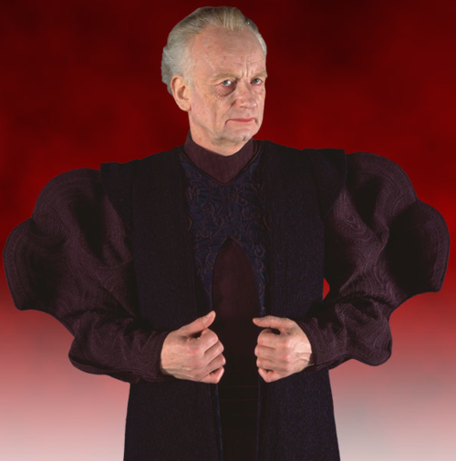

Did you ever hear the tragedy of Darth Plagueis The Wise? I thought not. It's not a story the Jedi would tell you. It's a Sith legend. Darth Plagueis was a Dark Lord of the Sith, so powerful and so wise he could use the Force to influence the midichlorians to create life… He had such a knowledge of the dark side that he could even keep the ones he cared about from dying. The dark side of the Force is a pathway to many abilities some consider to be unnatural. He became so powerful… the only thing he was afraid of was losing his power, which eventually, of course, he did. Unfortunately, he taught his apprentice everything he knew, then his apprentice killed him in his sleep. Ironic. He could save others from death, but not himself.
Published on: 5/4/2019
Lord Vader
Did you ever hear the tragedy of Darth Plagueis The Wise? I thought not. It's not a story the Jedi would tell you. It's a Sith legend. Darth Plagueis was a Dark Lord of the Sith, so powerful and so wise he could use the Force to influence the midichlorians to create life… He had such a knowledge of the dark side that he could even keep the ones he cared about from dying. The dark side of the Force is a pathway to many abilities some consider to be unnatural. He became so powerful… the only thing he was afraid of was losing his power, which eventually, of course, he did. Unfortunately, he taught his apprentice everything he knew, then his apprentice killed him in his sleep. Ironic. He could save others from death, but not himself.
Published on: 5/4/2010
Listen boy,
Did you ever hear the tragedy of Darth Plagueis The Wise? I thought not. It's not a story the Jedi would tell you. It's a Sith legend. Darth Plagueis was a Dark Lord of the Sith, so powerful and so wise he could use the Force to influence the midichlorians to create life… He had such a knowledge of the dark side that he could even keep the ones he cared about from dying. The dark side of the Force is a pathway to many abilities some consider to be unnatural. He became so powerful… the only thing he was afraid of was losing his power, which eventually, of course, he did. Unfortunately, he taught his apprentice everything he knew, then his apprentice killed him in his sleep. Ironic. He could save others from death, but not himself.
Published on: 5/4/2000

Young Skywalker,
Did you ever hear the tragedy of Darth Plagueis The Wise? I thought not. It's not a story the Jedi would tell you. It's a Sith legend. Darth Plagueis was a Dark Lord of the Sith, so powerful and so wise he could use the Force to influence the midichlorians to create life… He had such a knowledge of the dark side that he could even keep the ones he cared about from dying. The dark side of the Force is a pathway to many abilities some consider to be unnatural. He became so powerful… the only thing he was afraid of was losing his power, which eventually, of course, he did. Unfortunately, he taught his apprentice everything he knew, then his apprentice killed him in his sleep. Ironic. He could save others from death, but not himself.